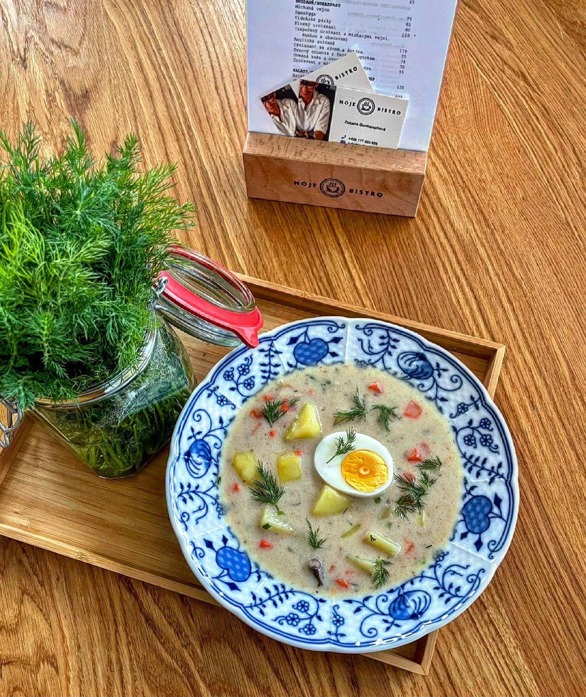

Hubová polievka podľa @mojebistro — Normy Jedál
ŠTVRTOK
• kulajda
• gnocchi s lososom a špenátom
Od 11:30 - 14:00 (alebo do vypredania)
Babická 1a, Praha 4,14900 (vchod z ul. Klíčová )
Čakáme vás v @mojebistro
#soup #lunch #obed #denninabidka #corona #coronatime #support #mojebistro #kulajda #mushrooms #mushroomsoup #hubovapolievka
_________________________________
Naše jedlá sú vždy pripravované s láskou k tradíciam, výhradne z čerstvých surovín, bez použitia instantnich zmesí a nahrážok